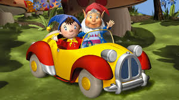

About Noddy
Noddy is awesome! He's an all time hero of the town who travels the city in his lovely car.
Noddy and his friends
Noddy's Characteristics
- He's Awesome
- He's got friends
- He saves the town
Noddy's Friends
Noddy has some awesome friends and I think his best friend is Big Ears. He's awesome. Click on the links below to read more about them.